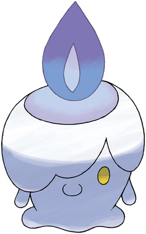

Green is the best color. This one is called "sea green" and is very pretty. This font was written by using the color name instead of the color code. This is probably the color I would pick since it is more legible. The size of this one was also changed to font size 10 and written in the Ariel Black font. It is a bit boring but is "Web Safe"
This one may be hard to read but it is my favorite shade of green. It is #00FA9A aka mediumspringgreen and was written using the color code instead of the name. Even though it is my favorite I typically would not pick this one as it isn't legible. It has been changed to have the "impact" font and a bigger size "12" font size to make it easier to read. This is also a bit boring but "Web Safe"
It is difficult to see the difference in the fonts that were chosen above but you can make font bold as well
This is what using the ALT attribute looks like when everything is correct. You you see the image just fine and the alternative text does not show as the image appears as it should.
This is what using the ALT attribute looks like when I mistype the image location. Instead it displays the broken image and the descriptive text that I chose to include.